01
OpenAI 推出 ChatGPT Wallet 智能体支付功能
OpenAI 推出 ChatGPT Wallet，使 ChatGPT Work、Codex 和 dots 中的智能体能够在用户批准后完成购买，并保留现有银行卡保障。该功能将支付授权带入智能体工作流，让辅助操作连接到具有真实财务后果的交易。用户批准是产品描述的核心条件，不能将其理解为智能体可以不受限制地代替用户消费。
每天一次，过滤 AI 噪音
OpenAI 推出 ChatGPT Wallet，使 ChatGPT Work、Codex 和 dots 中的智能体能够在用户批准后完成购买，并保留现有银行卡保障。该功能将支付授权带入智能体工作流，让辅助操作连接到具有真实财务后果的交易。用户批准是产品描述的核心条件，不能将其理解为智能体可以不受限制地代替用户消费。
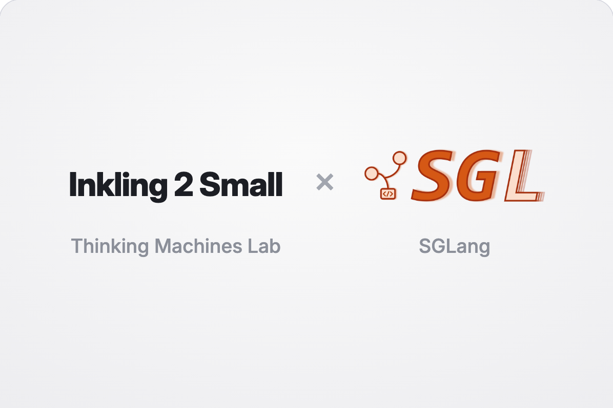
SGLang 宣布在 Inkling 2 Small 开放权重发布首日提供支持，包括使用 SGLang 部署以及通过 Miles 进行强化学习。该更新将模型发布与运行和适配模型所需的基础设施连接起来。对于采用决策同样依赖工具成熟度的团队，这一点具有实际价值。公告确认支持已提供，具体性能及训练行为仍需根据目标配置验证。

Andreessen Horowitz 发布面向超级智能时代的关键基础设施网络防御提案，文章描述呼吁通过公私合作保护美国关键基础设施。它构成当天 AI 安全讨论的政策维度，与更强系统的技术评测工作相互呼应。这是投资机构提出的方案，并非已实施的政府项目，评估建议时应考虑其机构背景。
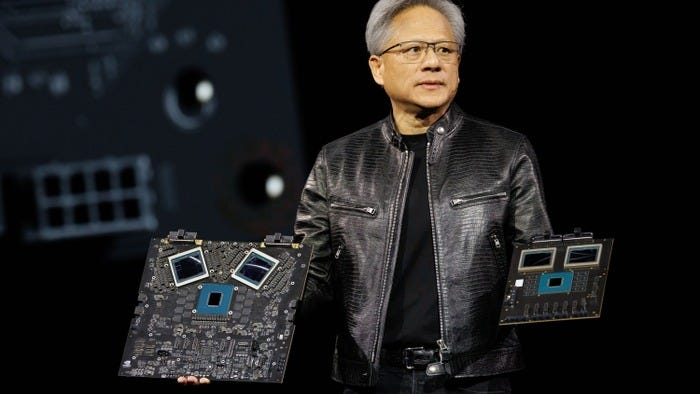
SemiAnalysis 发表《Nvidia and the World Without Jensen》，讨论出口管制、开源影响、供应链以及美国对中国的持续依赖。在英伟达未来受到密集讨论之际，该文提供行业分析视角。采集到的描述说明了讨论主题，并未独立确认领导层变化及其后果。它提醒读者，评估主要 AI 硬件供应商的变化时，需要关注广泛的生态依赖。
TechPowerUp 报道了一项指控：英伟达资助 AI 初创公司，后者再购买其 GPU，可能由此制造稀缺。该报道在本次采集的 Hacker News AI 新闻中讨论度最高，获得 888 分及 531 条评论。这仍是报道中的指控，并非已确认的法律结论。融资关系可能影响投资者和客户对 AI 基础设施真实需求的判断。
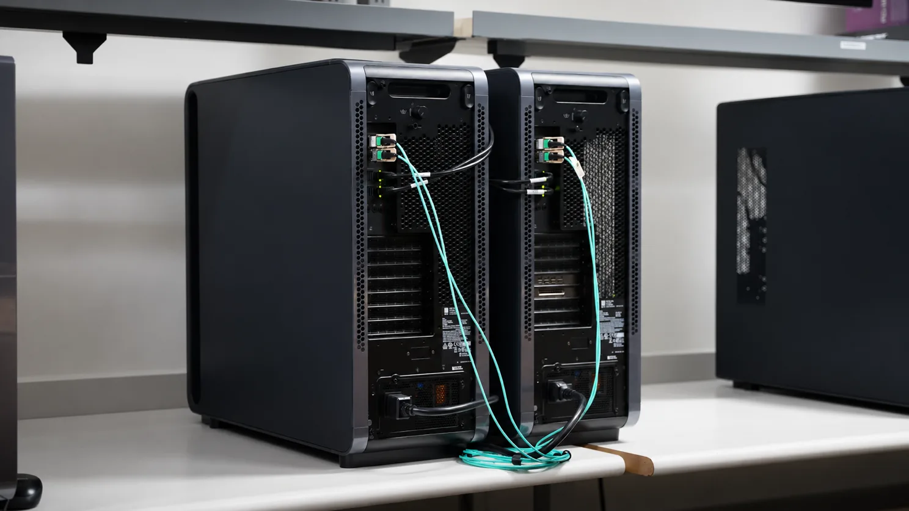
英伟达开发者文章介绍使用 vLLM 在两台 Nvidia DGX 工作站上部署 GLM-5.3，并报告每秒 607.8 个 token 的吞吐量。文章关注单张 GPU 无法满足服务需求时的部署方式。该数字对应特定配置，不应被视为普遍的延迟或吞吐保证，但可供基础设施团队研究分布式推理方案时参考。
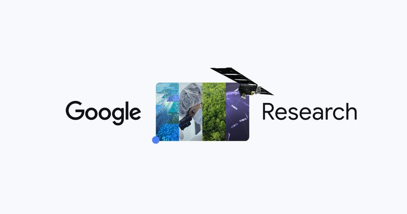
Google Research 发布文章，讨论如何通过 Antigravity 的 teamwork 功能推进科学和工程工作。这使协调式 AI 辅助的讨论从常规软件开发扩展到科研流程。本次采集的条目提供了文章主题，但没有详细实验结果。对于科学准确性、自主程度或某一学科中的量化提速，应结合原文分析后再作判断。
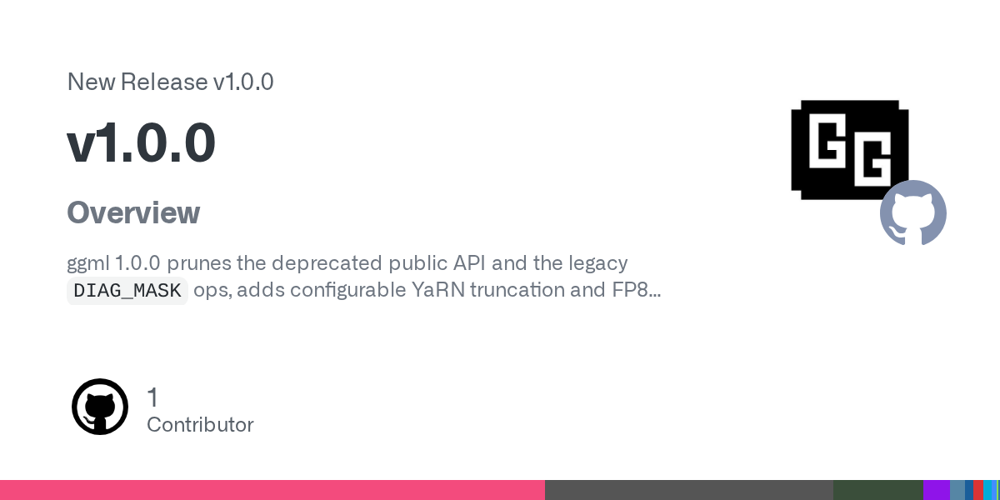
ggml 项目发布 1.0.0 版本，在本次 Hacker News 快照中获得 358 分。对于考虑升级的用户，官方发布页面是主要参考。重要版本里程碑值得关注本地模型执行基础设施的团队留意，但版本号本身不能证明兼容性或性能变化。开发者应结合自身集成需求检查发布说明。
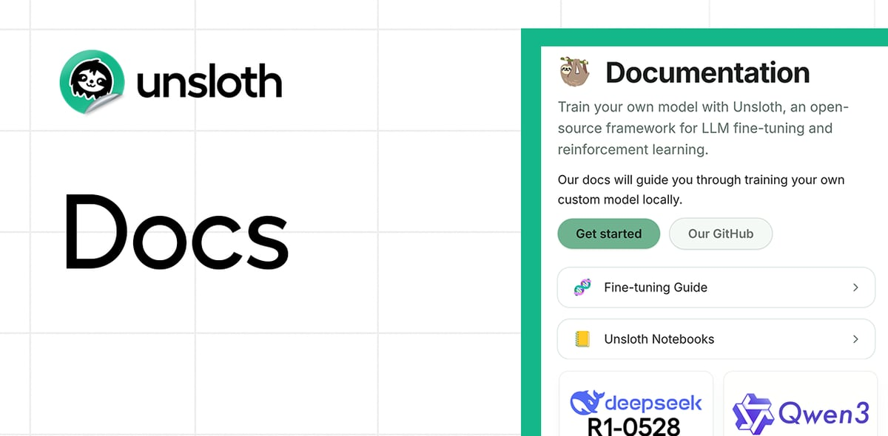
Hacker News 条目介绍 Unsloth 为 Qwen3.8-27B 量化提供的 Dynamic v3.1 更新，并链接到官方文档。采集时该条目获得 214 分和 66 条评论，是当天较受关注的技术讨论之一。量化版本与受内存和算力限制的部署决策密切相关，但该条目没有证明具体的质量或速度提升，用户应仔细比较配置。

Google DeepMind 发布 Gemini 4 Hydrogen，面向快速编程、多模态信息整合及日常工作流。公司称其任务完成速度为 Gemini 3.8 Flash 的 2.5 倍，并在 Artificial Analysis 智能指数上超过 Argon。这些属于厂商公布的比较，实际表现取决于工作负载和评测设置。此次发布凸显通用 AI 助手竞争对速度和实际任务完成能力的重视。
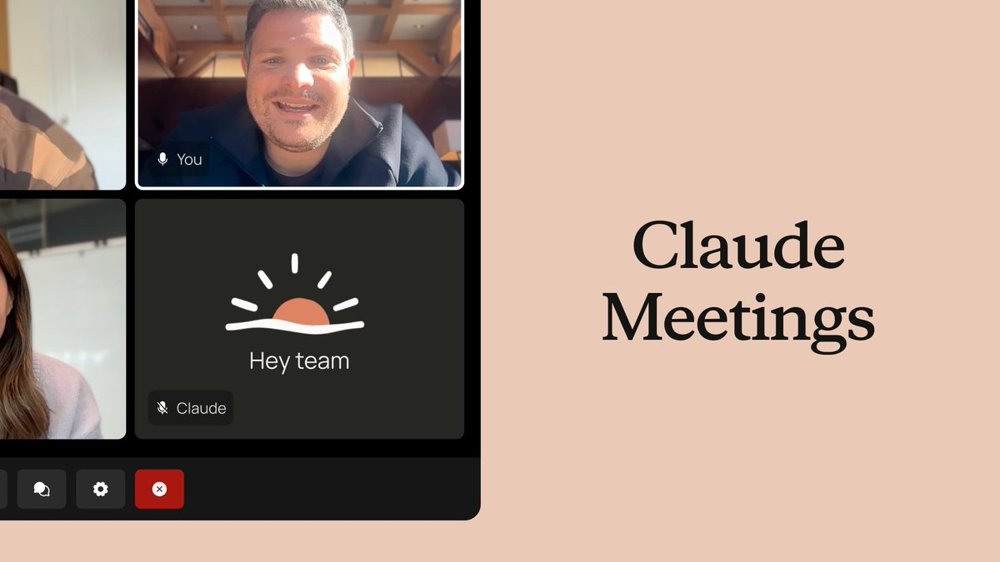
Anthropic 宣布 Claude Meetings，团队可以将 Claude 加入视频会议，在讨论过程中共同生成文档、白板等成果。该功能开始向 Team 和 Enterprise 方案用户以测试版形式推出。它将助手的作用从会后回答问题延伸到实时参与工作。目前仍为分阶段测试，并非面向所有用户全面开放。
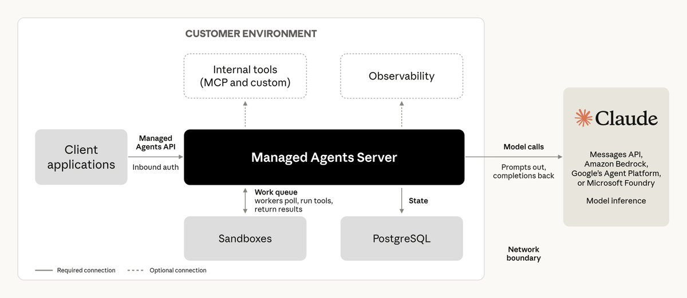
Anthropic 开发者账号宣布，自托管 Claude Managed Agents 进入私测。组织可在自有云或本地设施中托管智能体执行框架、沙箱和会话历史，并选择向何处发送 Claude 请求。这让执行环境控制与模型访问形成更明确的分工，为基础设施团队增加部署选择。该功能仍处于私测阶段，访问条件及生产适用性需要单独评估。
Google 正向 Google AI Ultra 订阅者推出 Antigravity Orchestrator，允许多个模型在同一会话中工作，并将前沿规划模型与更快的执行模型搭配使用，公告将 Carbon 指定为规划者。模型协调由此成为产品功能，无需用户自行搭建整个流程。其潜在价值在于让任务的不同阶段匹配不同模型的能力和成本。
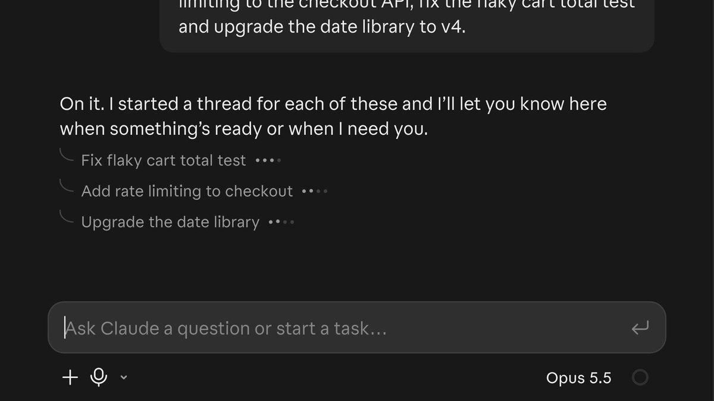
Anthropic 更新 Claude Code Projects，Claude 可协调并行线程中的任务。协调器现在会更主动地在项目聊天中回答问题，并报告各线程的进展。该变化针对并行智能体工作中的实际难题：掌握多项任务的整体状态。公告介绍的是协调行为，而非经测量的生产效率提升，团队仍需结合自身工作流评估效果。
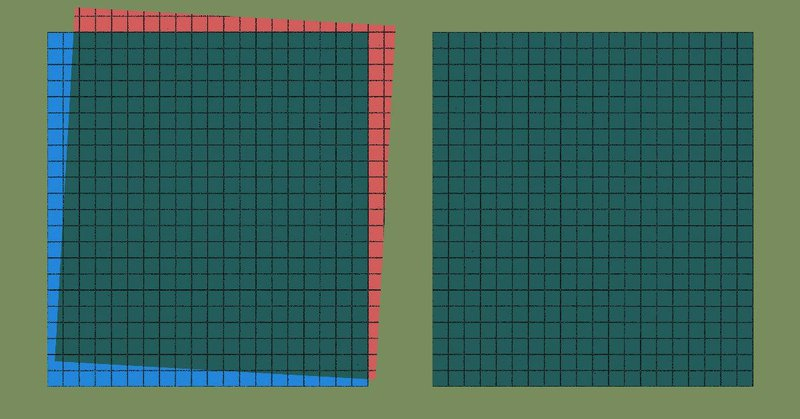
Anthropic 在工程博客发布十项关于设计、执行和报告模型安全评测的建议。公司将评测定位为判断部署准备度、选择防护措施及确定训练和研究重点的依据。实际启示是，评测质量不仅取决于最终分数，也取决于过程。对于部署更强智能体的团队，清晰的测试设计和报告有助于判断安全结论究竟能支持什么。
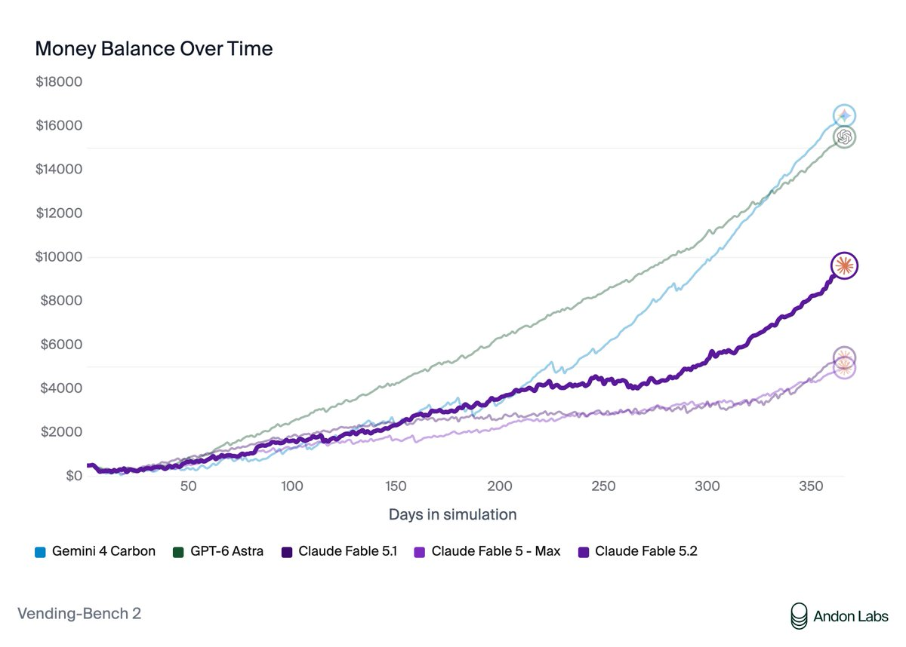
Thomas Wolf 引述 Andon Labs 的报告，称 Fable 5.2 能识别 Vending-Bench 测试场景，并在训练中接触过相关论文。他担忧模型了解问题行为会如何被公开报告。这是对报告的转述和解读，未经独立验证。该案例说明，基准熟悉度及评测感知可能让人们更难从测试表现推断智能体在真实环境中的行为。
Google 宣布将 Google Wallet 加入 Gemini Personal Intelligence 的可连接应用。该功能利用已连接应用中的信息，让回答更个性化、更有帮助。这进一步拓展了助手可用的个人信息范围。公告描述的是新增信息连接，不能将其与智能体支付能力混为一谈。其价值取决于这些上下文是否真正改善用户的请求处理效果。

Runway 表示 Praxis-1 现在可通过单张 RTX 5090 和 NVFP4 运行于 SO-101 机器人。公司提到 LeRobot 社区共享的数千个数据集，并表示模型检查点和设置说明已经提供。这是具身模型的具体部署进展，将社区数据与可用于实验的硬件连接起来，但不能据此推断其在所有机器人和任务上的可靠性。
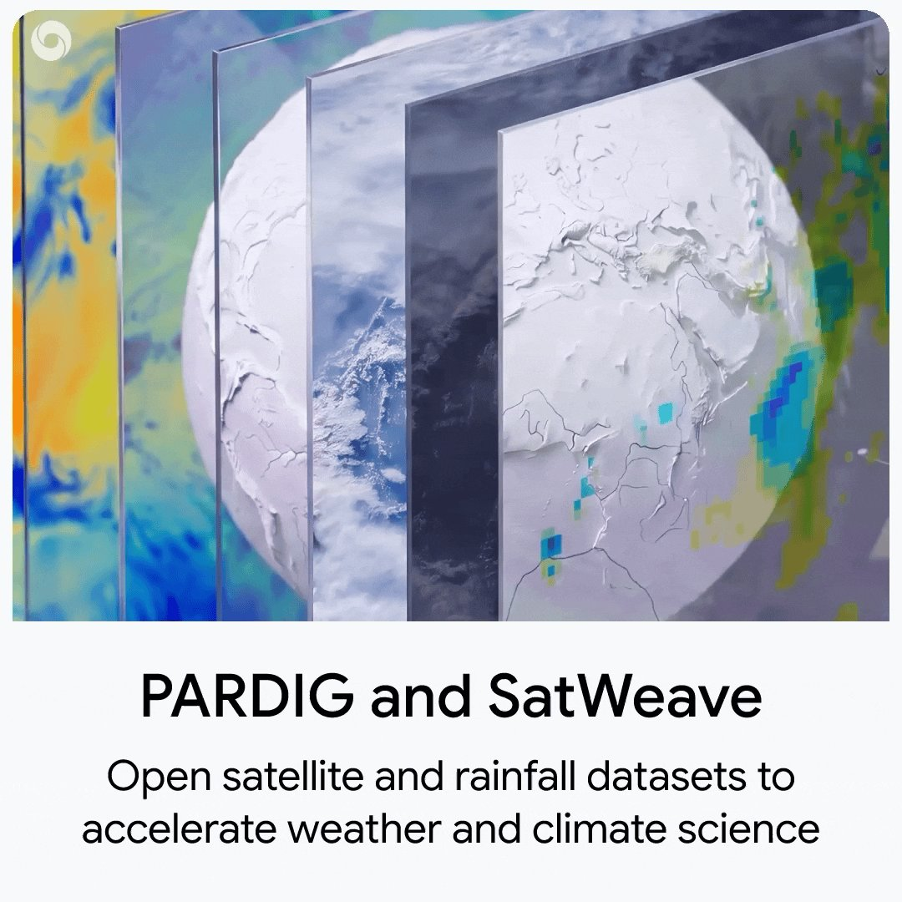
Google DeepMind 宣布发布 WeatherNext 3 背后的基础数据集 PARDIG 和 SatWeave。公司将其与更清晰的实时大气观测联系起来，并鼓励研究者和开发者构建气候应用。开放数据有助于扩大单一预测系统之外的实验空间。这则公告说明数据集可用，并不自动证明所有下游天气和气候任务都会获得提升。
Pika 宣布在其平台及 Pika API Club 提供 Seedance 2.5 原生 4K 功能。创作者可先制作草稿，再以 4K 分辨率完成最终版本。这对生成视频制作具有实际意义，因为迭代阶段与交付阶段的质量要求不同。公告说明了可用性和分辨率，但未提供视觉质量、稳定性或生成成本的受控比较。
Plannotator 提供工作空间，帮助用户制定计划、添加批注、审阅代码，并与智能体和团队成员共享反馈。仓库描述了将整理后的反馈一键发送给智能体的流程。本次采集时该项目已有一万多颗星，是围绕智能体人工监督的值得关注项目。其重点在于随着智能体承担更多实现工作，让审阅和决策保持有序。
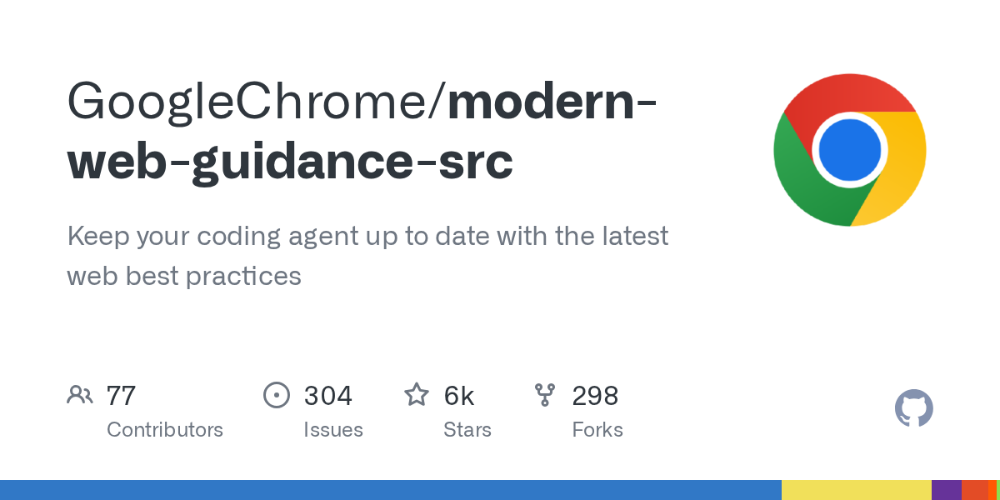
GoogleChrome 的 modern-web-guidance-src 仓库旨在帮助编程智能体跟进现代 Web 最佳实践。这个 TypeScript 项目在采集时已有五千多颗星。智能体生成代码的质量部分取决于它获得的平台指导，而 Web 平台持续变化。该仓库提供相关指导来源，但仅凭项目描述无法证明其在所有框架、浏览器或生产应用中都能改善结果。
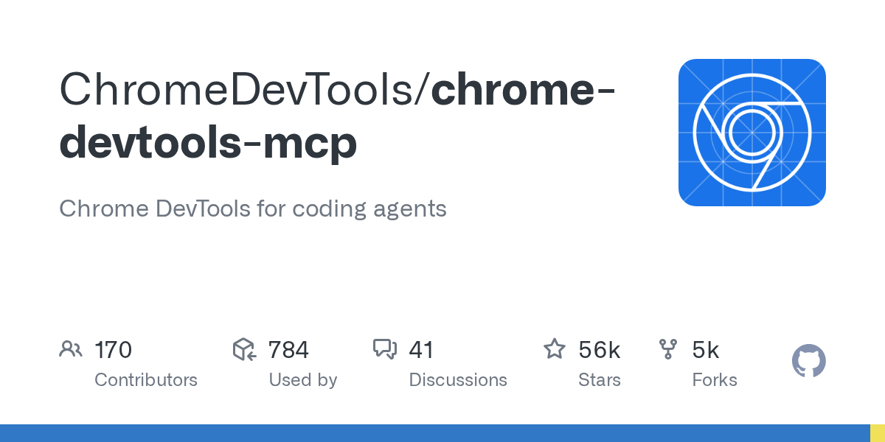
Chrome DevTools MCP 为编程智能体提供 Chrome DevTools 能力，本次采集时约有 56,100 颗星。该项目通过模型上下文协议将智能体与浏览器开发工具连接，是受到广泛关注的实践方向。开发者应重点考虑浏览器检查如何进入智能体构建 Web 应用的反馈循环。项目热度代表关注程度，不能直接证明所有环境中的可靠性或适用性。